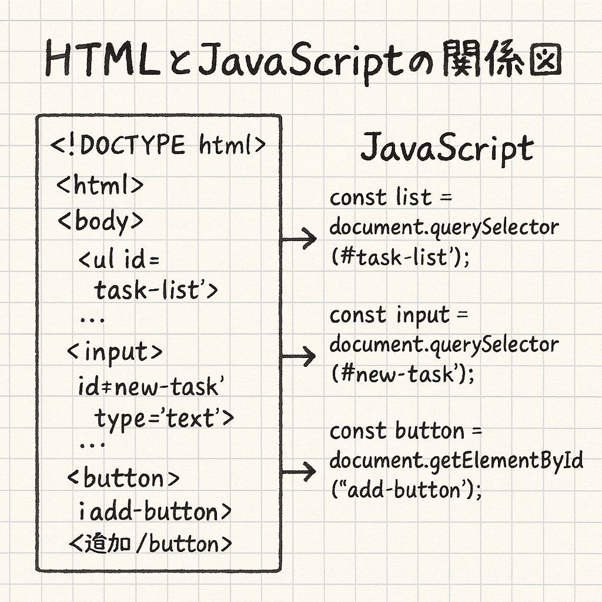

この章の目的
JavaScriptでHTML要素（DOM）を操作する方法と、ToDoアプリでの活用例を学びます。
DOMの取得
document.querySelector() や getElementById() を使って要素を取得します。
const addButton = document.querySelector("#add-button");
const input = document.getElementById("task-input");要素の作成と追加
createElement と appendChild を使って新しい要素を作ります。
const li = document.createElement("li");
li.textContent = "新しいタスク";
ul.appendChild(li);HTMLとJavaScriptの関係図
HTMLの要素とJavaScriptのコードが、どのように対応・連携しているかを図で示しています。
属性の設定
HTML要素に属性を追加するには setAttribute を使います。
input.setAttribute("placeholder", "タスクを入力");ToDoアプリでの実践例
実際にアプリでは、タスクのDOMをすべてJavaScriptで構築しています。
const checkbox = document.createElement("input");
checkbox.type = "checkbox";
checkbox.checked = task.done;
const span = document.createElement("span");
span.textContent = task.text;
const li = document.createElement("li");
li.appendChild(checkbox);
li.appendChild(span);
ul.appendChild(li);